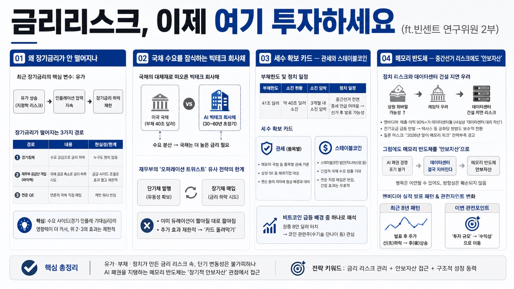

전인구경제연구소MORNING DIGEST · 2026-08-30 · 전인구경제연구소🎬 영상
금리리스크, 이제 여기 투자하세요 (ft.빈센트 연구위원 2부)
미국 장기금리가 쉽게 떨어지지 않는 구조적 이유와, 중간선거發 데이터센터 건설 지연 리스크에도 왜 메모리 반도체를 여전히 '안보자산'으로 봐야 하는지 짚는다.

01왜 장기금리가 안 떨어지나
장기금리는 유동성·경기·인플레이션을 모두 반영하지만, 최근엔 유가가 핵심 변수 — 트럼프-이란 갈등 이후 유가가 높은 수준을 유지하며 금리 하락을 막고 있다.
장기금리가 떨어지는 경로는 셋: ①경기침체(누구도 원치 않음) ②재무부의 공급단 개입(바이백) ③연준의 QE(케빈 워시는 반감). 바이백은 공급 사이드 조절이라 수요 사이드(경기·인플레·기대심리) 영향력에 못 미쳐 효과가 짧다.
02국채 수요를 잠식하는 빅테크 회사채
미국 국채(40조달러 부채)에 대한 상환 불안 속에, AI 빅테크들이 30~60년 만기 초장기 회사채를 국채와 같은 시기에 발행 — 안전자산 대체재 수요가 국채에서 빅테크채로 분산되며 국채가 사람을 모으려면 더 높은 금리를 줘야 하는 구조.
옐런 시절부터 이어진 '단기채 발행+장기채 매입' 전략(오퍼레이션 트위스트 유사)도 이미 듀레이션이 짧아질 대로 짧아져 추가 효과가 제한적 — "카드 돌려막기"에 비유.
03세수 확보 카드 — 관세와 스테이블코인
부채한도 41조달러 중 이미 40조 소진, 3개월 내 소진 임박 — 중간선거 전엔 증세를 말 못 하고 버티다 선거 후 발표할 가능성. 메모리·국방 등 품목별 관세로 삼성·SK 같은 해외기업에 세금을 물리는 시나리오도 거론(젠슨 황이 각국을 돌며 저자세로 협상하는 배경과 대비).
케빈 워시는 연준의 직접 국채매입엔 반감이지만 스테이블코인 법안(지니어스법 등)을 통한 간접적 국채수요 창출에는 우호적 — 이 기대가 최근 비트코인 급등(장중 8만달러 터치)의 배경 중 하나로 해석됨. 코인 관련주(수기술·단나이 등 국내주 포함) 관심 필요.
04메모리 반도체 — 중간선거 리스크에도 '안보자산'
상원이 뒤바뀔 가능성이 커지며 레임덕 우려 → 엔비디아(사실상 '데이터센터 대리 자산', 매출·이익 90%+가 데이터센터發) 밸류체인 전반에 데이터센터 건설 지연 리스크 부각. 전기요금 급등 반발로 텍사스 등 공화당 텃밭에서도 데이터센터 유치에 보수적으로 돌아서는 조짐, 일론 머스크도 "2026년 말이 메모리 피크"라는 전력부족 경고로 입장을 바꿈.
그럼에도 "AI 패권 경쟁을 포기할 수 없는 이상 데이터센터는 결국 지어진다"는 관점에서 메모리 반도체를 경제논리가 아닌 안보자산 개념으로 접근 — 병목이 이연될 수는 있어도 방향성 자체는 훼손되지 않는다는 시각.
엔비디아 실적 발표는 최근 8년간 발표 후 주가가 먼저 빠졌다가 상승하는 패턴 반복 — 이번엔 관전포인트가 '투자 규모'가 아니라 '수익성'으로 이동했다는 점이 핵심.